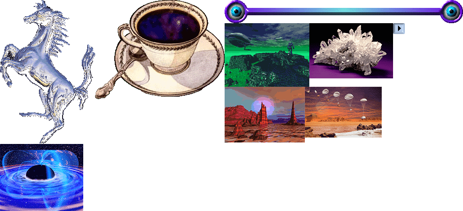
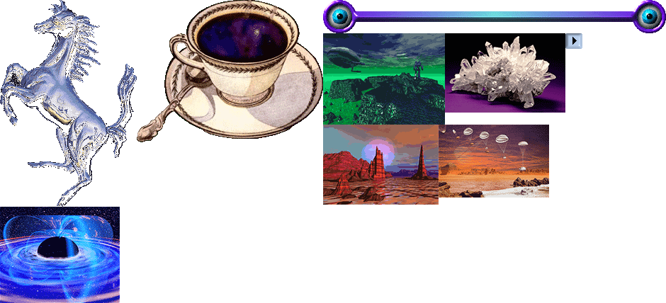
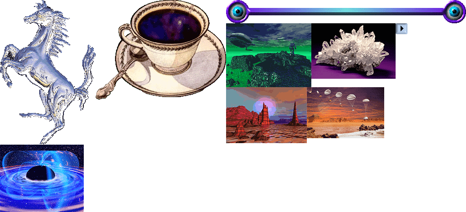
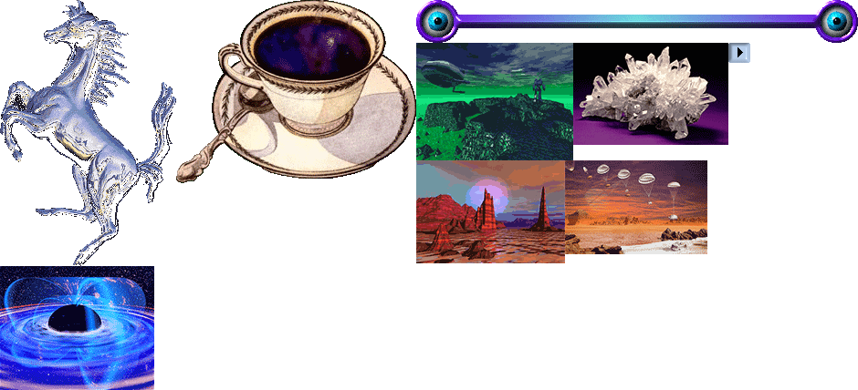
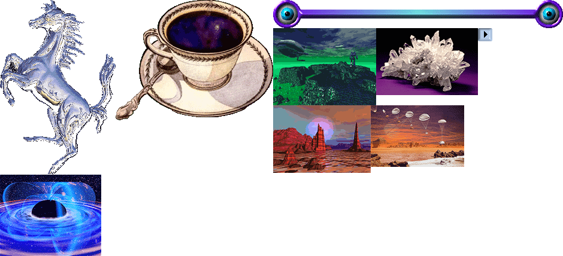

You need to enable JavaScript to run this app.
Мы будем жить вместе! (ЕЕЕЕЕЕЕ)
Четверг, 9 вечера
Чайковского 23, 17

ВИШ-ЛИСТ
сушилка для одежды
чайник для газовой плиты
ведро белой водоэмульсионки
плакаты, картины
 



 
